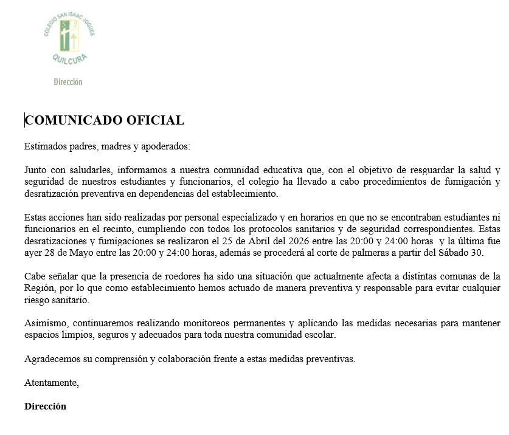
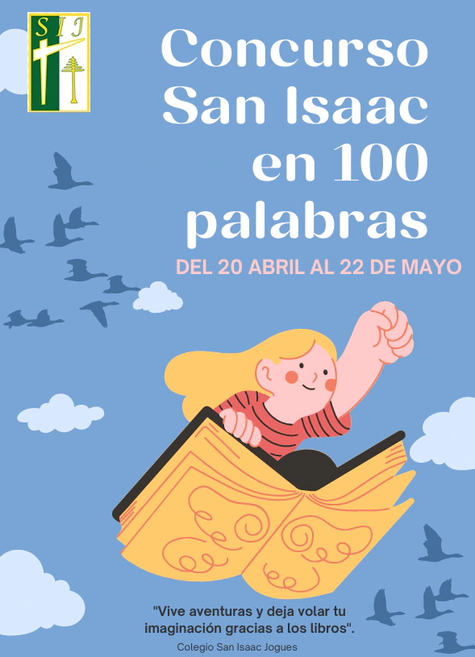
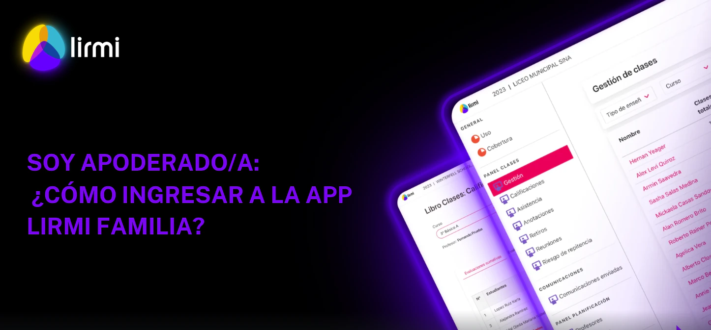
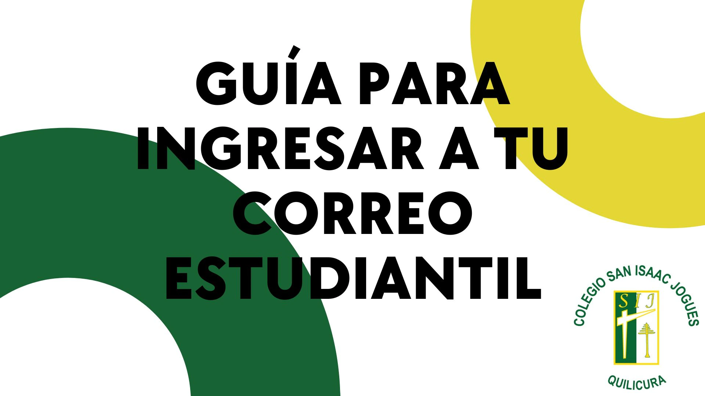
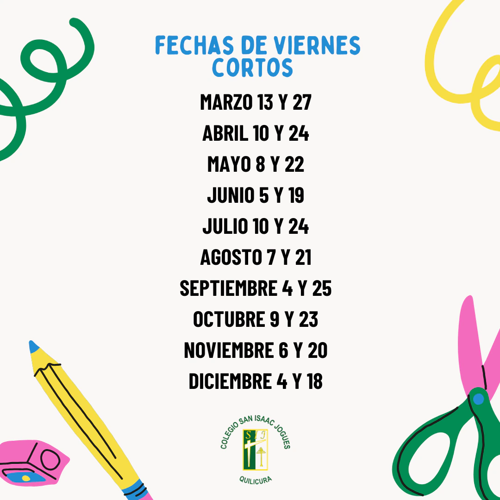
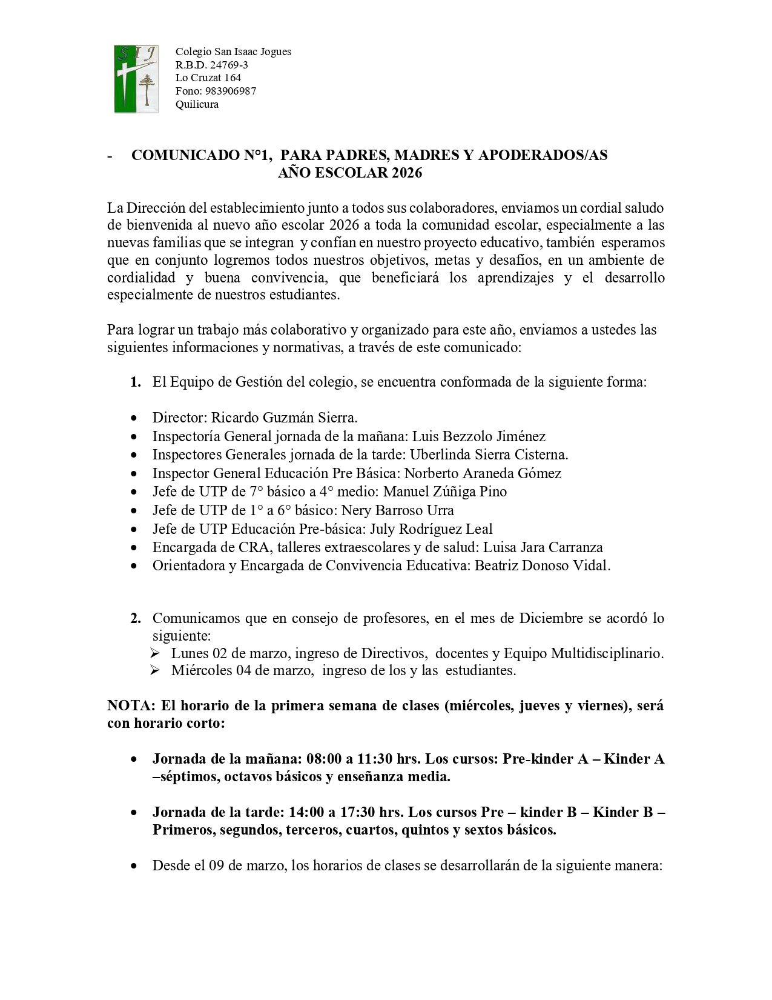
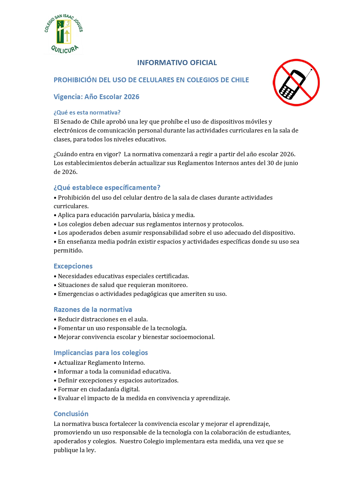
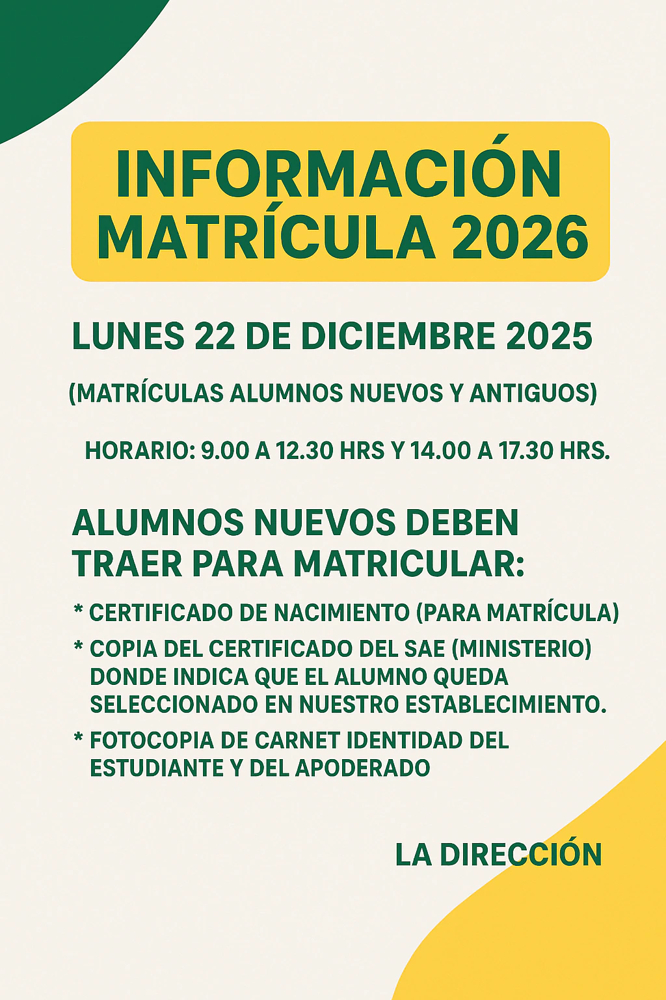

Información institucional
Comunicados
Avisos, fechas y recursos importantes para estudiantes y familias.
Más reciente
Información destacada

Información urgente
Medidas sanitarias preventivas realizadas en las dependencias del colegio para mantener espacios limpios y seguros.
Leer comunicado
Lecturas complementarias
Listado solicitado para estudiantes de enseñanza básica.

San Isaac en cien palabras
Información del concurso literario para estudiantes.

Ingreso a Lirmi
Guía de acceso para madres, padres y apoderados.

Correo estudiantil
Instrucciones para utilizar la cuenta institucional.

Viernes cortos
Fechas de jornadas reducidas durante el año escolar.

Comunicado apoderados
Información general para el desarrollo del año escolar.

Uso de celulares
Disposiciones para dispositivos móviles durante la jornada.

Matrículas 2026
Fechas y antecedentes importantes del proceso.
Listados oficiales
Útiles escolares 2026
Consulta la lista completa de materiales solicitados para cada nivel.